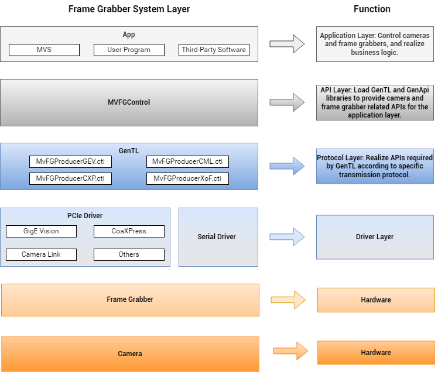

Overview
The Frame Grabber SDK is a software development kit, which provides unified APIs for the access and control of frame grabbers. It simplifies the API calling process, and supports operations of multiple types of frame grabbers at the same time.
Currently, GigE Vision, CoaXPress, Camera Link, and XoFLink frame grabbers are supported. The APIs can be divided into 7 modules, involving version information, frame grabber, camera, image acquisition, image processing, events, and general APIs, providing free space for software design.
Getting Started
Development Environment
| GigE Vision Frame Grabber |
| Hardware Configuration: PCI-E gen2 × 4 |
| Software Environment: Ubuntu16.04-24.04 x86_64 Operating System, gcc/g++ V4.8.5 or later version |
| CoaXPress Frame Grabber |
| Hardware Configuration: PCI-E gen2 × 8 (CoaXPress-6), PCI-E gen3 × 8 (CoaXPress-12) |
| Software Environment: Ubuntu 16.04-24.04 x86_64 Operating System, gcc/g++ V4.8.5 or later version |
| CameraLink Frame Grabber |
| Hardware Configuration: PCI-E gen2 × 4 |
| Software Environment: Ubuntu 16.04-24.04 x86_64 Operating System, gcc/g++ V4.8.5 or later version |
| XoFLink Frame Grabber |
| Hardware Configuration: PCI-E gen2 × 8 |
| Software Environment: Ubuntu 16.04-24.04 x86_64 Operating System, gcc/g++ V4.8.5 or later version |
Overall Hierarchy Diagram
